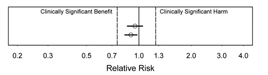
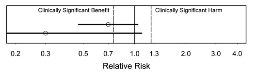
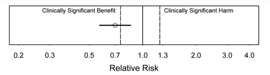
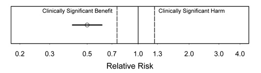
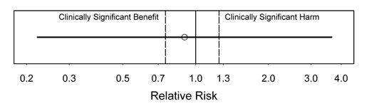

Common Biostatistical Problems and the Best Practices that Prevent Them
This is based on Peter Bacchetti's lecture on "Common Biostatistical Problems and the Best Practices that Prevent Them."
Send any comments to peter@biostat.ucsf.edu._
The article below was adapted in 2008 by Nancy Hills and may need updating. More recent lecture notes are available at the parent page
Common Biostatistical Problems and the Best Practices That Prevent Them
P-values are often the primary focus when researchers interpret statistical analyses of their data, despite the important contributions to interpretation that are made by examining estimates, confidence intervals, and graphical summaries. This over-emphasis (and sometimes exclusive emphasis) on p-values contributes to many problems, including the first, which I aso consider to be the biggest:
PROBLEM 1. P-VALUES FOR ESTABLISHING NEGATIVE RESULTS
This is very common in medical research and can lead to terrible misinterpretations. Unfortunately, investigators tend to believe that p-values are much more useful than they really are, and they misunderstand what they can really tell us.
The P-value Fallacy
The term "p-value fallacy" has been used to describe rather more subtle misinterpretations of the meaning of p-values than what will be discussed here. For example, some believe that the p-value is the probability that the null hypothesis is true, given the observed data. But much more naive misinterpretation of p-values is common.
Almost no one would really defend these first two statements:
1. The p-value tells you whether an observed difference, effect or association is real or not.
2. If the result is not statistically significant, that proves there is no difference.
These are too naive and clearly wrong. We all know that just because a result could have arisen by chance alone does not mean that it must have arisen by chance alone. That would be very bad logic.
But how about the following statement:
3. If the result is not statistically significant, you "have to" conclude that there is no difference. (And you certainly can't claim that there is any suggestion of an effect.)
This statement may seem a bit more defensible, because it resembles what people are taught about statistical hypothesis testing and "accepting" the null hypothesis. This may seem only fair: you made an attempt and came up short, so you must admit failure. The problem is that in practice, this has the same operational consequences as the two clearly incorrect statements above. If you are interested in getting at the truth rather than following a notion of "fair play" in a hypothesis testing game, then believing in this will not serve you well. Unfortunately, some reviewers and editors seem to feel that it is very important to enforce such "fair play".
Adding a Power Calculation
What if we not only get p<0.05 but we also did a power calculation? It is very common to reason that if a power calculation were done and p>0.05, then there is no effect. The logic is that we tried to make the sample size large enough so that if a difference were present, we would have been likely to obtain a p-value<0.05. Because we did not get p<0.05, we therefore believe that a difference is unlikely to be present.
This is still a poor approach, because reasoning via p-values and power is convoluted and unreliable. One problem is that power calculations are usually inaccurate, since they have to be based on assumptions that are hard to know in advance. Inaccuracy is theoretically inevitable and empirically verified. A study of randomized clinical trials in 4 top medical journals ( NEJM, JAMA, Annals of Internal Medicine, and Lancet) found that more than half used assumed SD's off by enough to produce a >2-fold difference in sample size.[1]
Of course, one could do better by re-estimating power after the study is completed. But the assumptions needed for power calculations are still not fully known, and post-hoc power calculations are not considered meaningful. The CONSORT guidelines for reporting randomized clinical trials specifically warn against this practice, stating that, "There is little merit in a post hoc calculation of statistical power using the results of a trial".[2] Why is this not worth doing? Because there is a simpler and better alternative: Confidence intervals show simply and directly what possibilities are reasonably consistent with the observed data, and are widely acknowledged to be superior and sufficient. (Additional references here.)
Here are some other situations that make it tempting to believe that a large p-value must be conclusive:
p>0.05 + Large N = No effect
p>0.05 + Huge Expense = No effect
p>0.05 + Massive Disappointment = No effect
But not if contradicted by the CIs! Sometimes we want to believe that a study must be conclusive, because it was such a good attempt or because it looks like it should be conclusive or because nothing as good will ever be done again. But these considerations carry no scientific weight and cannot overrule what is shown by the CI. If the CI is wide enough to leave doubt about the conclusion, then we are stuck with that uncertainty.
Example
Here is an example of the p-value fallacy: A randomized clinical trial of a fairly serious condition compares two treatments. The observed results are:
Treatment A: 16 deaths in 100
Treatment B: 8 deaths in 100
These produce the following analyses:
Odds ratio: 2.2, 95% CI 0.83 to 6.2, p=0.13
Risk difference: 8.0%, 95% CI -0.9% to 16.9%
This was reported as "no difference in death rates", presumably based on the p-value of 0.13. This type of interpretation is alarmingly common, but the difference is not zero, which would really be "no difference"; it is 8%.
No "Significant" difference
Sometimes you see reports of "no significant difference in death rates". This might be intended to simply say that the p-value was not <0.05, but it can easily be read to mean that the study showed that any difference in death rates is too small to be important. Although some journals have the unfortunate stylistic policy that "significant" alone refers to statistical significance, the word has a well-established non-technical meaning, and using it in this way promotes misinterpretation. Certainly the difference was "significant" to the estimated 8 additional people who died with treatment A.
No "Statistical" difference
The phrase "no statistical difference in death rates" is newer and also seems to mean that the observed difference easily could have occurred by chance. This term seems to give the impression that some sort of statistical magic has determined that the observed difference is not real. This is exactly the misinterpretation that should be avoided. (See "Statistical Ties, and Why You Shouldn't Wear One", http://www.medscape.com/viewarticle/550738).
A sensible interpretation would be:
"Our study suggests an important benefit of Treatment B, but this did not reach statistical significance."
Examples in Prominent Places
Finding egregious example of the p-value fallacy in prominent places is all too easy.
Example 1. Vitamins during Pregnancy
A study of vitamins C and E and the risks of preeclampsia and perinatal complications published in NEJM concluded that "supplementation with vitamins C and E during pregnancy does not reduce the risk of preeclampsia in nulliparous women, the risk of intrauterine growth restriction, or the risk of death or other serious outcomes in their infants".[7] This very definitive conclusion was based on the following results:
Preeclampsia: RR 1.20 (0.82 - 1.75) This certainly suggests the the vitamins are not effective, because the estimate is a 20% increase in the outcome. But the CI does include values that would constitute some effectiveness, so the conclusion may be a bit overstated.
Growth restriction: RR 0.87 (0.66 - 1.16) Here, we have a big problem. The estimate is a 13% reduction in the outcome, so the definitive statement that vitamins do not reduce this outcome is contradicted by the study's own data. Vitamins did appear to reduce this outcome, and the CI extends to a fairly substantial 34% reduction in risk.
Serious outcomes: RR 0.79 (0.61 - 1.02) The same problem is present here, and it is even more severe. An observed 21% reduction in the most important outcome has been interpreted as definitive evidence against effectiveness. If we knew that this observed estimate were correct, then vitamin supplementation, or at least further study, would probably be worthwhile. In fact, the data in the paper correspond to an estimate of needing to treat 39 women for each serious outcome prevented, a rate that would almost certainly make treatment worthwhile.
Example 2. Fat Consumption and Breast Cancer
A less blatant but even higher-profile example is provided by the report on the Women's Health Initiative study on fat consumption and breast cancer.[8] An article in Newsweek entitled "The New Fight Over Fat" priominently depicted a 12-decker cheeseburger next to the text: "Even diets with only 29% of calories coming from fat didn't reduce the risk of disease." This interpretation was typical of headlines. Deeper in the articles, writers struggled to convey some of the uncertainty about the results, but they were hampered by the poor choice of emphasis and presentation in the original JAMA publication.
The primary result was an estimated 9% reduction in risk of invasive breast cancer (Hazard Ratio = 0.91, 95% CI 0.83 - 1.01, p=0.07). An accurate sound bite would have been, "Lowering fat appears to reduce risk, but study not definitive." An interesting additional result was a reduction in the risk of breast cancer mortality (Hazard Ratio = 0.77, 95% CI 0.48 -1.22). The estimate here is a more substantial reduction in risk, but the uncertainty is wider. If this estimate turned out to be true, this would be very important. Unfortunately, the authors chose to primarily emphasize the fact that the p-value was >0.05. This gave the clear (and incorrect) impression that the evidence favors no benefit of a low-fat diet. The primary conclusion in the JAMA abstract was "a low-fat dietary pattern did not result in a statistically significant reduction in invasive breast cancer risk." The overemphasis of the the fact that the p-value was >0.05 promoted considerable misunderstanding.
BEST PRACTICES
Best Practice 1. Provide estimates with confidence intervals that directly address issues of interest.
This is usually important in clinical research because both the direction and the magnitude of any effect are often important. How to follow this practice will usually be clear, as it was in the above examples. Ideally, this will already have been planned at the beginning of the study. Often, an issue will concern a measure of effect or association, such as a difference in means, an odds ratio, a relative risk, a risk difference, or a hazard ratio. Think of what quantity would best answer the question or address the issue if only you knew it. Then estimate that quantity.
This practice is often followed, but then ignored when data is interpreted. The above examples provided estimates and confidence intervals, but these were ignored in the major conclusions, which were based only on the fact that the p-values were >0.05.
Best Practice 2. Ensure that major conclusions reflect the estimates and the uncertainty around them,
and, in particular,
Best Practice 2a. Never interpret large p-values as establishing negative conclusions.
This is the practice that is too often neglected, particularly for negative studies. The estimates and CIs, not just the p-value, should contribute to the interpretation.Think about these guidelines when interpreting your results:
- The estimate is the value most supported by the data. This means that a conclusion is inappropriate whenever it would be wrong if the estimate turned out to be the true value.
- The confidence interval includes values that are not too incompatible with the data. This means that conclusions are exaggerating the strength of the evidence whenever they imply that some values within the CI are impossible or very unlikely.
- There is strong evidence against values outside the CI. If all important effects are outside the CI, then you can claim a strong negative result.
Here is an example of a strong negative conclusion that is well-supported, from a study of outcomes among newborns with total bilirubin leves of 25 mg per deciliter or more [9]: "Conclusion: When treated with phototherapy or exchange transfusion, total serum bilirubin levels in the range included in this study were not associated with adverse neurodevelopmental outcomes in infants born at or near term." This was supported by a statement in the abstract concerning the CIs: "On most tests, 95 percent confidence intervals excluded a 3-point (0.2 SD) decrease in adjusted scores in the hyperbilirubinemia group."
But what if the results are less conclusive, such as those in the vitamin study discussed above? For the following results:
- Growth restriction: RR 0.87 (0.66 - 1.16)
- Serious outcomes: RR 0.79 (0.61 = 1.02)
an honest interpretation of what can be concluded from the results would be something like this:
"Our results suggest that Vitamin C and E supplementation may substantially reduce the risk of growth restriction and the risk of death or other serious outcomes in the infant, but confidence intervals were too wide to rule out the possibility of no effect."
This interpretation reflects the key facts that 1) the estimates indicate big enough protective effects to be important and 2) the uncertainty around them is too large to permit a strong conclusion that any protective effect exists.
What would have happened if the vitamin paper had been submitted with this more reasonable interpretation? The paper probably wouldn't have ended up in NEJM! Unfortunately, this more accurate interpretation would probably have greatly reduced the paper's chance of acceptance.
The tension between fair interpretation and marketability for high-profile journals is the "elephant in the room" when it comes to conflict of interest. We are all under pressure to make our papers seem as interesting as possible. Despite the careful attention to financial conflicts of interest in medical research, the conflict between scientifically accurate interpretation versus maximizing interest, getting into a high prestige journal, and generally attracting attention (and citations) is largely unrecognized. It is always present, can have a strong influence on presentation and interpretation, and yet gets little attention.
The p-value fallacy can help make negative studies seem more conclusive and interesting. The most prestigious journals tend to prefer results that seem conclusive, perhaps because they are trying to serve clinicians in addition to scientists, and clinicians can make the most use of clear results. Although there is a lot of pressure to make results seem as interesting as possible, this should only go so far. Using the p-value fallacy to make a study seem definitive in one direction instead of suggestive in the other direction would clearly be going too far. In many cases, this is probably not deliberate. In this case, the authors may have felt that p>0.05 was definitive because the study was large and expensive, or perhaps because they had done a power calculation (but their assumptions were wildly off, as usual with power calculations).
Be vigilant and be honest! The usual safeguards against bias due to conflict of interest are disclosure and correspondingly increased vigilance. Because this conflict is always present, the only obvious response is to always be vigilant.
Best Practice 3. Discuss the implications of your findings for what may be true in general.
Do not focus on "statistical significance" as if it were an end in itself. This may seem like a subtle distinction, but it is fundamental. We do research to learn about what is true in general in the real world, and p-values and statistical significance do not exist in the real world. Interpretation should focus clearly on what evidence the study provides about what may be generally true, not treat statistical significance as an end in itself. Statistical significance is only important by virtue of what it conveys about the study's evidence. Because of the extreme emphasis on statistical significance in medical research, this point is often forgotten and we slip into thinking that statistical significance itself is what really matters. Most people understand that statistical significance implies strong evidence for a real effect, but this is usually not all that is important, and the implications of lack of statistical signficance are much less clear.
In the case of the Women's Health Initiative, we care about the biological effect of dietary fat and about actual cases of breast cancer that could be prevented.The disconnect between the author's statements and how they were interpreted illustrates why this Best Practice is important.
WHI conclusion: "a low-fat dietary pattern did not result in a statistically significant reduction in invasive breast cancer risk...However, the nonsignificant trends...indicate that longer, planned, non-intervention follow-up may yield a more definitive comparison."
The week after the article mentioned above, Newsweek published a follow-up concerning the difficulties that the press and the public have in understanding scientific results, particularly about diet research. (Scientists also have difficulty with these issues.) Despite this focus, the writers still did not understand what the WHI article stated, perhaps because they assumed--quite reasonably, but incorrectly--that the article must be addressing the real-world question.
Newsweek's interpretation of the WIH conclusion: "The conclusion of the breast-cancer study--that a low-fat diet did not lower risk--was fairly nuanced. It suggested that if the women were followed for a longer time, there might be more of an effect ."
Both the major conclusion from the abstract and the caveat that followed it concerned statistical significance rather than what is really true. Although the "nonsignificant trends" were mentioned, their implications for the important issues were not discussed. The Newsweek writers mis-translated these into more relevant--but incorrect--statements. The two phrases highlighted in red in the two statements above are not the same, and the statements highlighted in green also do not match--the authors meant that the difference may reach p<0.05, not that it will get bigger.
Because the WIH authors chose to completely neglect any direct assessment of the implications of their findings for what may really be true, they made serious misunderstandings virtually inevitable.
Best Practice 3 and Best Practice 2 are complementary. Following Best Practice 2 will usually keep you on track for Best Practice 3, and vice versa.
Avoid the p-value fallacy by checking negative interpretations
While it may seem easy to understand that the p-value fallacy is not valid, it can be surprisingly hard in practice not to lapse into interpreting large p-values as reliable indications of no effect. It is easy to slip into relying on "p>" reasoning. This may be because:
- "Yes" or "No" reasoning is more natural;
- The focus on p-values is engrained in research culture, as we saw in the case of the Women's Health Initiative;
- The real level of uncertainty in research is often inconveniently large, which can make results seem less interesting. The vitamin study discussed above is a good example of this.
To avoid this problem, you can double-check all negative interpretations and examine estimates and confidence intervals associated with them.
Perform searches for the words "no" and "not". Whole word searches on these two terms should find most negative interpretations of statistical analyses. Check each sentence found and ask yourself the following questions:
- Is there an estimate and CI supporting this?
- What if the point estimate were exactly right? Would the conclusion still make sense?
- What if the upper confidence bound were true? Does the conclusion allow for this possibility?
- What if the lower confidence bound were true? Does the conclusion allow for this possibility?
To be very thorough, also search for the words "failed", "lack", "absence", "disappeared", "only", "rather", "neither", "none". Negative interpretations sometimes use these words.
How to Interpret Estimates and Confidence Intervals
The following figures show some concrete examples of how to interpret estimates and CIs. These assume a somewhat idealized situation where we have exact limits on what is clinically important, but they illustrate the main ideas. Often it will be more practical to first calculate the estimates and CIs and then consider whether the values obtained are large enough to be clinically important. In some cases it may be hard to argue that any effect, if real, would be too small to be important.
Many detailed examples of how to word interpretations that reflect estimates and CIs are available online.
Figure 1.

Interpretation:"We found strong evidence against any substantial harm or benefit." Because we have strong evidence against any values outside the CI, both these cases argue strongly that any effect is clinically unimportant. Note that this is true even though one is statistically significant.
Figure 2.

Interpretation: In this figure, there is suggestion of substantial benefit, because the estimate would be an important benefit if true. However, there may be no effect (not statistically significant), because the CI includes no effect.
Which of these results would be more exciting? The lower one, even though it has wider uncertainty, because the estimate is so much better.
Figure 3.

Interpretation: In figure 3, there is strong evidence of a benefit (statistically significant). A substantial benefit appears likely, but the CI is too wide to rule out a clinically unimportant benefit, i.e., the CI includes some benefits that would be too small to be clinically important.
Figure 4.

Interpretation: In this figure, we see strong evidence of substantial clinical benefit. This is the most satisfying type of result. Even the upper confidence bound is in the substantial benefit range.
Figure 5.

Interpretation: In this figure, no conclusions are possible due to a very wide CI. This is the least satisfying type of result. There is very little information in the study data.
Also see online resource at https://ctspedia.org/CTSpedia/ResultsInterpretation
Example from a typical collaboration
First draft text: "There were no statistically significant effects of DHEA on lean body mass, fat mass or bone density."
Final wording: "Estimated effects of DHEA on lean body mass, fat mass, and bone density were small, but the confidence intervals around them were too wide to rule out effects large enough to be important."
I find that modifications like this are needed in the majority of papers that I am asked to co-author.
Are large p-values good for anything?
We can better understand the limited value of large p-values by noting what they are good for. Perhaps the only time they are directly useful is in "due-diligence" situations, such as assessing model assumptions when they seem reasonable a priori, where you just need to show that you made some reasonable effort and nothing jumped out. In these situations, a large p-value indicates that your effort did not produce strong evidence of a problem, even though it cannot be interpreted as providing strong evidence against a problem.
Be sure to use statements like "no interaction terms of treatment with other predictors in the model had p<0.1" rather than "there were no interactions of treatment with other predictors in the model", which would be an instance of the p-value fallacy. Another example is "We checked linearity assumptions by adding quadratic terms for each linear predictor, and none had p<0.05", not "there was no non-linearity", which again would be based on the p-value fallacy.
Here is an example from a paper on estimating past hepatitis C infection risk from reported risk factor histories:[10]
"We note that the confidence intervals were not narrow enough to rule out potentially important interactions, but in the absence of strong evidence for such interactions we focus on the simpler models without them."
PROBLEM 2. MISLEADING AND VAGUE PHRASING
"We failed to detect..."
"Our results do not support..."
"We found no evidence for..."
"Our data did not confirm..."
"There is no scientific evidence that BSE [Mad Cow Disease] can be transmitted to humans or that eating beef causes it in humans." --Prime Minister John Major, 1995
Of course, it turned out the BSE was transmitted to humans, and over 150 people died from it. "There is no evidence" is commonly used to give the impression that there is evidence on the other side. Although this and similar phrases sound "scientific", they promote sloppy reasoning.
Wording similar to this is popular in politics and advertising, because it gives the misleading impression of a strong case against a conclusion when no such case exists, without being technically incorrect. For the same reasons, the strange popularity of these phrases in scientific writing is disturbing. Whle such phrases may be technically correct, they are bound to be misread as implying evidence against an association or effect. They often involve or promote the p-value fallacy. And when there is strong evidence against an effect, they are too weak.
Best Practice 4. State what you did find or learn, not what you didn't
What a study did find is what is interesting, and any conclusions or interpretation should be based on this. Like Best Practice 3, this also helps with following Best Practice 2.
This no only prevents deception, but also can make statements clearer and stronger. Oddly, investigators often understate their conclusions using weak phrasing. The phrases quoted above seem like safe, conventional ways to state interpretations, despite their drawbacks. I still find that these are the phrases that first pop into my mind when I think about how to state a finding.
FRAM, a nationwide study of fat abnormalities in HIV, was a large study that carefully investigated changes in fat in various anatomical sites among persons with HIV. Its results strongly contradicted established thinking in this area, which was that visceral fat (known as "VAT") increased as peripheral fat decreased and the two were causally linked. Among other results supporting its conclusion of no reciprocal change was the following, showing that peripheral fat loss did not have any substantial association with central fat gain (note upper confidence bound of 1.06):
Peripheral fat loss association with central fat gain, OR: 0.71, CI: 0.47 to 1.06, p=0.10.
Despite the strong results, an early draft stated that "our results do not support the existence of a single syndrome with reciprocal findings". This was revised to read more appropriately: "We found evidence against any reciprocal increase in VAT in HIV-infected persons with peripheral lipoatrophy". [11]
Another example comes from a study of the safety of cannabinoids in persons with treated HIV:
Marijuana effect on log10 VL: -0.06 (-0.26 to 0.13)
Dronabinol: -0.07 (-0.24 to 0.06)
These upper confidence bounds were considered too small to be important, so this was strong evidence against any substantial harm.
In the first draft, the stated conclusion read, "Overall there was no evidence that cannabinoids increased HIV RNA levels over the 21-day study period".
The final draft more appropriately stated that "This study provides evidence that short-term use of cannabinoids, either oral or smoked, does not substantially elevate viral load in individuals with HIV infection".[12]
PROBLEM 3. SPECULATION ABOUT LOW POWER
This is the opposite of claiming high power to bolster a negative conclusion based only on a p-value, as discussed above (Problem 1). Sometimes investigators want to argue that their hoped-for results could still be possible, so they mention that power might have been too low and that could be why they didn't see what they expected. This again is too convoluted and unreliable to be worthwhile.
A good example is from the WHI study of diet and breast cancer that we have been discussing:
"There were departures from the design assumptions that likely reduced study power...If the WHI design assumptions are revised to take into account these departures [less dietary fat reduction], projections are that breast cancer incidence in the intervention group would be 8% to 9% lower than in the comparison group [and] the trial would be somewhat underpowered (projected power of approximately 60%) to detect a statistically significant difference, which is consistent with the observed results."
This illustrates the contorted sort of reasoning that speculation about low power requires. What exactly are they trying to say?
Their intended meaning seems to boil down to the following: "There might be a 9% reduction in risk. We could have missed it because power was only 60%." This speculation is completely pointless, because the conclusion is better supported, and much clearer, from the examination of the estimate and the confidence interval. The HR=0.91, so of course a 9% reduction is possible. It's what they actually saw!
Let's be clear on what happened here. World-class researchers reporting a very high-profile (and hugely expensive) study lapsed into convoluted and completely pointless reasoning. This is a dramatic illustration of how exclusive focus on whether p<0.05 leads to easily avoided problems. Had the authors followed Best Practice 2, no such speculation would have been required, and the implications of their results would have been much clearer. To repeat:
Best Practice 2. Ensure that major conclusions reflect the estimates and the uncertainty around them.
(Additional references here.)
PROBLEM 4. EXCLUSIVE RELIANCE ON INTENT-TO-TREAT ANALYSIS
"Intent-to-treat" (ITT) analysis refers to analysis of all randomized subjects, regardless of how well they cooperated with treatment, possibly even including those who refused to actually undergo study treatment at all. ITT analysis is useful for preventing post-randomization self-selection from producing spurious positive findings, but it does not ensure the most accurate possible estimates for all purposes.
Consider a "negative" study of vitamin E in diabetics that claimed to have proven that vitamin E supplementation does not prevent cancer (this was based on the p-value fallacy, by the way). The study used ITT: "To reduce bias, we included continuing follow-up from those who declined active participation in the study extension and stopped taking the study medication". [13]
But ITT produces underestimates of actual biological effects: it is biased toward no effect. Thus, in addition to ignoring their estimates and CIs, they based a negative conclusion on an approach that is biased in that direction. This is very different from still having a positive finding despite some bias in the other direction, which is where ITT analysis works well.
This is an area where the WHI study did reasonably well. They used specialized methods to attempt to estimate what effect the fat-lowering intervention would have had if it were followed as recommended. These methods try to avoid the self-selection bias that simple per-protocol analyses (or observational studies) would have, while also avoiding the biases of ITT analysis.
The WHI estimate of effect if adherent to a low-fat diet was estimated as a breast cancer Hazard Ratio of 0.85 (0.71 to 1.02). This was a bit lower than the 0.91 from the primary analysis, but it still just misses p<0.05. They went further in trying to account for adherence to the intervention, but balked at going beyond saying that the use of a more stringent adherence definition "leads to even smaller HR estimates and to 95% CIs that exclude 1".
Best Practice 5. Learn as much as you can from your data
It will not always be possible to fulfill this goal if analyses are strictly limited to ITT. Doing ITT analysis is usually important, so designing procedures to allow ITT is a good practice. In particular, it is good to continue to follow subjects who stop study medication. But ITT can be supplemented with additional analyses, notably analysis restricted to those who actually underwent the study treatments as planned, termed "per-protocol" analysis.
So a specific Best Practice is to
Best Practice 5a. Do per-protocol analyses in addition to ITT, especially if
- there is interest in biological issues: ITT is not designed to address biological effects and can be poor due to bias toward no effect.
- treatment is double-blinded: this reduces (but does not eliminate) the potential for self-selection biases that ITT protects against. Having results from both ITT and per-protocol analyses can provide a fairer assessment of the uncertainty about a treatment's effect. This is especially important if negative conclusions from ITT analysis are less supported by per-protocol analysis. Also, when treatments are randomized and blinded, stratifying or controlling for the level of adherence or the time of dropout can produce an "in-between" estimate that may be sensible.
Another possibility is
Best Practice 5b. Consider advanced methods to estimate causal effects
There are new and complex "causal inference" methods that seek to avoid both the biases of ITT and those of per-protocol analysis. These are what WHI used. You are very likely to need help from a statistician to carry these out.
Two closely related problems are:
PROBLEM 5. RELIANCE ON OMNIBUS TESTS and
PROBLEM 6. OVERUSE OF MULTIPLE COMPARISONS ADJUSTMENTS
Omnibus tests
(like ANOVA) are methods that
- check for any one or more of a large number of possible departures from a global null hypothesis (nothing is happening anywhere). They are
- inherently focused only on p-values (Problem 1) and they are
- diffuse, and so are weaker for specific issues. This makes them generally less useful than analyses focused on specific relationships whose magnitudes can be estimated as well as tested. In particular, when the p-value is large, the main use for omnibus tests is the misuse highlighted in Problem 1.
One reason that some people like omnibus tests is that they help guard against obtaining spurious positive results due to multiple comparisons. Because omnibus tests look broadly for any one of many possible departures from the null hypothesis, they are not good at finding any specific one. This makes them "conservative" for any specific question, which some people consider desirable or rigorous.
Multiple comparisons adjustments
- each result detracts from the other.
Another way of guarding against chance false positive results is application of multiple comparisons adjustments. These are also inherently focused only on p-values, promoting use of the p-value fallacy. They also have the unfortunate property that the results of each analysis are automatically assumed to detract from all the others, with no consideration of how well the different results fit together conceptually or scientifically. Like omnibus tests, these are also very conservative, which some people like. But accuracy is a much more worthy goal than conservatism, and this is often better achieved by less formal (and more intelligent) ways of guarding against spurious findings.
Following are examples of how to justify not using multiple comparisons adjustments, both for papers and in grant proposals:
Example text for responding to a manuscript review or for inclusion in a paper:
"Although we examine many differences and issues, we report nominal p-values, without adjustment for multiple testing. Such adjustment would be focused on avoidance of one or more results with p<0.05 in the case where all differences are truly zero,[14-16] which is an extremely unrealistic hypothesis about the state of nature in our situation. In addition, adjustment would require that each result detract from the others, but there are clear biological relationships among many of the issues that we examine, and these permit coherent sets of findings to reinforce each other rather than detract from one another. Thus, multiple comparison adjustment would do exactly the wrong thing in such cases.[17] We therefore rely on scientific judgment rather than formal adjustment methods to indicate where caution is warranted despite findings with p<0.05."
Example text for inclusion in a grant proposal:
"Although this Aim involves many different measures, we do not plan formal adjustments for multiple comparisons. This is because we expect many measures to show statistically significant differences, and that directions and magnitudes of differences (perhaps including some with p>0.05) will fit a biologically coherent pattern. In this case, each result will reinforce the other, rather than detracting from one another as required by formal multiple comparisons adjustments such as the Bonferroni method. Conversely, if only one or a very few measures reach statistical significance and their directions and/or magnitudes do not coherently fit with << our substantive theory >>, then we will note that the result(s) with p<0.05 lack biological plausibility and could be due to chance despite meeting the conventional cutoff for statistical significance."
Typical problems that may be encountered
Scenario 1:
An investigator who has just concluded an animal experiment is puzzled and worried. The experiment included:
- a condition that just confirms that the experment was done correctly;
- some places where different conditions should be similar; and
- some conditions that should differ.
He saw the results he expected in pairwise comparisons, but "ANOVA says that there is nothing happening".
Because this had a specific focus on certain pairwise comparisons to address the scientific questions, he had done t- tests and estimated pairwise differences, obtaining positive results that he thought made sense. But he thought that he "had to" perform ANOVA, and this produced a p-value a bit larger than 0.05. So he thought that to be "rigorous" he would have to reach the opposite conclusion of what he found with the focused analyses. In fact, the focused results were what mattered; unfortunately, there is a risk that reviewers may think otherwise.
In fact, reviewers often state flatly that omnibus tests and multiple comparisons adjustments must be used when in fact those approaches would be very inappropriate.
Scenario 2:
A primarily descriptive study that examined effects of four different administration routes had many positive results, not a single one that was likely due to chance. However, the reviewer stated:
"Repeated measures analysis of variance should be completed. *Only if the time-by-treatment interaction is significant *, should time-specific comparisons be made. Then multiple comparison procedures, such as Tukey's test, should be used rather than repeated t- tests."
This would treat p>0.05 on the unfocused omnibus test of time-by-treatment interaction as a reliable indicator that no important differences are present: Problem 1.
The reviewer's comment, particularly the phrase highlighted in red, may sound rigorous, but it is only "rigorous" in the sense of being rigid or harsh, not in the sense of being exactly precise. It requires extreme conservatism--not accuracy--which could result in missing or understating important findings.
Scenario 3:
Another study of the biology of morphine addiction had a great deal of scientific structure that omnibus tests or multiple comparisons adjustments would not take into account. The design of the study was very complex, involving:
- two different receptors;
- antagonists;
- different brain regions with and without a certain receptor; and
- systemic vs. local administration.
The results of many pairwise comparisons fit a biologically coherent pattern. Conditions that should have differed did, while comparisons that should have been similar were similar.
A reviewer of the manuscript ignored the consistency of the findings and wrote the following strident comment:
"The statistical analyses are naive. The authors compute what appear to be literally dozens of t- tests without any adjustment to the α level--indeed *the probability of obtaining false positives grows with the number of such tests computed *. The authors should have conducted ANOVAs followed by the appropriate post-hoc tests. Their decision to simple [ sic ] compute t- tests on all possible combinations of means is statistically unacceptable."
The statement highlighted in red is incorrect. The chance of obtaining at least one false positive increases if the null hypothesis holds for all comparisons. False positives in general do not become more likely, and the chance of getting many false positives that all fit together in a coherent biological theory is extremely small. This is a clear case where the results of multiple analyses all reinforce each other rather than detracting from each other as required by omnibus tests and multiple comparisons adjustments.The probability of obtaining multiple positive results exactly where expected and negative results exactly where expected does not grow; it becomes vanishingly small.
Striving for the following best practices will often lead to much better analyses and interpretations than use of omnibus tests and multiple comparisons adjustments.
Best Practice 6. Base interpretations on a synthesis of statistical results with scientific considerations.
In clinical research, there is usually outside knowledge that can be used to help with the choice of analyses and their interpretation. Recognizing and explaining whether and how results of different analyses fit together is crucial for obtaining the best understanding of what can be learned from the study. This will usually require consideration of the directions and magnitudes of estimated effects, along with the uncertainty shown by the CIs, rather than consideration of p-values alone.
Best Practice 6a. Rely on scientific considerations to guard against overinterpretation of isolated findings with p<0.05. (This is usually preferable to multiple comparisons adjustment.)
In particular, it is important to realize when one or a few findings reach p<0.05 but the ensemble of results does not have a compelling explanation. If the results with p<0.05 are not especially more plausible than other quantities estimated, and the directions and magnitudes of these and other results do not show patterns that reinforce the findings, then it is reasonable to regard those findings as suggestive (or even potentially spurious) rather than conclusive, despite their small p-values. Given that our publishing environment has substantial disincentives for such cautious interpretation of findings with p<0.05, this requires strong dedication to fair interpretation.
Best Practice 6b. Acknowledge the desirability of independent replication, particularly for unexpected findings.
Replication plays a crucial role in solidifying scientific knowledge, but the tendency to focus only on supposedly conclusive "findings" can sometimes cause this to be overlooked. For example, a recent editorial, by a prominent statistician, addressed the topic of subgroup analyses, which is a version of the multiple comparisons issue.[18] It failed to mention any role for replication.
Best Practice 7. Choose accuracy over conservatism whenever possible.
Many consider conservatism to be very desirable and rigorous, but this certainly is not so when accuracy is a viable alternative. Conservatism is a type of bias, and bias is bad. Sometimes it is better to know the direction of the bias rather than to be uncertain. Intent-to-treat analysis, omnibus tests, and multiple comparisons adjustments introduce bias with a known direction, but it is still bias. You will often be able to do better by thinking carefully about all your results.
Best Practice 1 and Best Practice 2, obtaining estimates and CIs and taking them into account when interpreting results, will often be helpful for achieving accurate interpretation. They will usually steer you away from overly conservative, automatic methods based only on p-values.
PROBLEM 7. ENTANGLED OUTCOMES AND PREDICTORS
Predictors and outcomes that have parts of their definitions in common can cause severe problems.
EXAMPLE 1: Using body mass index (BMI) as a predictor of central fat.
In the case of fat abnormalities in HIV infected persons, early studies controlled for BMI when assessing whether peripheral fat loss was associated with central fat gain. Because fat amounts contribute directly to BMI, this caused a spurious association.
Those with low peripheral fat were less likely to have high central fat. But the opposite picture emerges if you control for BMI. Those with low values of both peripheral and central fat had their low central fat "explained" by a low BMI, thereby leaving the estimated association to be determined only by the rare cases with low peripheral fat and high central fat. This field of inquiry was seriously misguided for many years because of this seemingly obvious problem.
EXAMPLE 2: Total time on treatment as a (fixed) predictor of survival time.
Patients can only be treated if they are alive. Those who die early will necessarly have their total time on treatment limited by how long they lived. Someone who died after 2 days will have at most 2 days of treatment. Conversely, someone with 5 years of treatment must have lived at least 5 years. Proportion of time on treatment, although less obviously biased, also may depend on survival time and be potentially biased.
EXAMPLE 3: Number of rejection episodes as a predictor of post-transplant survival.
Someone who died on day 1 would have at most 1 rejection episode, while someone with 5 episodes would have to have lived quite a bit longer.
To avoid these problems, either
1) ensure that the outcome is not part of the definition of a predictor, and vice versa, or
2) be very careful and clear with interpretation.
In general, it is simplest and safest to make sure that outcome and predictors are fully distinct. For time-to-event analyses, use time-dependent covariates, defined only using measurements up to the present. In general any fixed (non-time-dependent) covariates should be known from information only up to time zero. And even for time-dependent covariates, any use of "look-ahead" information is likely to cause trouble.
Some Technical Problems and Ways to Avoid Them
1. No assessment of assumptions.
Be sure to describe what you did to assess assumptions and what you found. As noted above, it is not necessary to prove that assumptions are valid, but it is important to perform some due diligence looking for major violations.
2. Ignoring dependence and clustering
An extreme case of this is performing unpaired analyses on paired data. Other cases include treating repeated measurements on the same people as if they were independent.
3. Unclear details for time-to-event: operational definitions, early loss, event ascertainment
- Provide operational definitions of starting time, occurrence of event, and censoring time. Any analysis of time to an event needs to be clear about the time from when to when;
- Summarize follow-up among those who were censored because follow-up is complete for anyone who had the event. It does not matter whether the event occurred at 2 days or 5 years--either way, we know all we need to know about that person's outcome. The amount of follow-up matters for those who did not have the event, especially the minimum follow-up and/or the number of subjects with shorter than desired follow-up. Mixing the early events into summaries of follow-up times obscures this information;
- Summarize early loss to follow-up and the reasons for it. Censoring due to loss to follow-up is more likely to violate the assumption of non-informative censoring, so this is a particular concern that should be addressed separately from observations censored just due to the planned end of the study or observation period;
- Describe how events were ascertained. This is important for establishing the completeness of ascertainment, and sometimes for explaining clumps of events (e.g., if many were found at a scheduled 6-month visit).
4. Poor summaries (e.g., summarizing skewed data with a mean and standard deviation)
For skewed data, medians are usually better summaries. The CI for the median can be added to show how precisely it is estimated, or the range and/or quartiles (IQR) can be added to show the variation in the population.
There is sometimes confusion about whether to show SDs or SEs. Show SEs (or CIs, which are usually better) to indicate the precision of estimates. Show SDs to indicate the variability in the population.
5. Showing inadequate or excessive precision
In general, too little precision may leave the reader wondering about the exact magnitude. For example, p=0.01 could mean anything from 0.005 to 0.015, which is a 3-fold range. Extra precision is not directly harmful, but gives a spurious impression of how precise the results are. It also can look naive, giving an astute reader or reviewer the impression that you do not know what is important and what is not.
For odds ratios, relative risks, and hazard ratios, do one of the following:
- give the value to two decimals if <2.0, one if >2.0, or
- give all values to two decimals. This has the possible advantage of always the same number of decimals, but this can be excessive. ORs like 24.56 look a bit odd.
Give p-values to two significant digits (leading 0's don't count), to a maximum of three or four. Sometimes, people give a maximum of three digits, and this is what some Stata procedures provide. But giving up to four is sometimes desirable and is usually also fine.
Do not use "p<" for values of 0.001 or more; use "=". That is, don't say p<0.01 when you could say p=0.0058.
Never use "p=NS" or "p>0.1". This gives needlessly vague information and encourages Problem 1.
Do not show chi-squared or other statistics that provide the same information as p-values (but are less interpretable). These add no information and clutter presentation of results. They may seem to add some technical cachet, but leaving out unimportant details actually conveys a better impression of technical savvy.
6. Poorly scaled predictors
Common examples of this problem include using age in years or raw CD4+ cell count. In regression models, the coefficients for numeric predictors are the estimated effects of a 1-unit increase in the predictor. So if the age variable is in years, the estimated effect is for a 1-year increase in age, which is often too small to be readily interpretable. When a 1-unit increase is a very small amount, estimated coefficients will necessarily be very small and results will be hard to interpret.
For example, an OR of 1.0051 per 1 cell/mm\xB3 increase in CD3 count is very hard to interpret. It is also hard to rescale this by eye, because the OR for a 100 cell increase is (1.0051)\xB9\xBA\xBA, which most people cannot calculate in their heads (it's 1.66).
To avoid this problem, rescale numeric predictors before running regression models (or use lincom, in Stata, afterwards). For eample, make a new variable cd4per100=cd4/100.
7. Terms likely to be misread ("significant")
Don't needlessly give readers and reviewers the opportunity to misunderstand what you mean.
Avoid the use of the word "significant" by itself. Use "statistically significant" if meaning p<0.05; use "important", "substantial", or "clinically significant" if that is the intended meaning. As noted under Problem 1, some journals reserve the word "significant" used by itself to mean "statistically significant". If they do not allow the full term, just avoid using it at all (this may be a good strategy anyway).
Use "Relative Hazard" or "Hazard Ratio" for proportional hazards model results, not "Relative Risk"; this is sometimes used for analysis of a binary outcome.
Use "Mann-Whitney" instead of "Wilcoxon" or "Wilcoxon rank-sum" to avoid confusion with "Wilcoxon signed-rank". Both "Mann-Whitney" and "Wilcoxon rank-sum" are used, due to the near simultaneous, independent development of the method.
8. Missing data
Missing data can cause bias, depending on why it is missing. Some causes of missing data can produce severe bias in the data that remain. For example, those with the riskiest behavior may be more inclined to skip questions about risk factors. The more that is missing, the more likely that there is a problem with what remains. Think about why participants may have declined to provide the information.
Prevention of missing data is best. If is is unavoidable, however,
- Clearly disclose how much;
- Give reasons when known;
- Assess differences in non-responders (You can compare those who responded to those who didn't on demographics and other variables that are more complete. This can provide clues about why some people didn't respond and what impact that may have on your results.)
- Perform sensitivity analyses (For example, when comparing two treatments, you can make a pessimistic assumption about those with missing outcomes in one arm and an optimistic assumption for the other arm. If the conclusion remains qualitatively the same, then you can have confidence that is was not caused by bias due to missing data.
- Consider advanced methods (For example. there are Stata do-files available to facilitate a method called multiple imputation (see http://www.ats.ucla.edu/stat/stata/Library/ice.htm). You will likely need help from a statistician to use such approaches.
When comparing univariate and multivariate results, use the same set of observations. For multivariate modeling, the default in Stata and other programs is to delete all observations that have missing values for any predictor or for the outcome. (For stepwise selection, observations missing any candidate predictor are deleted, even if the candidate is never used.) This means that smaller models may have more observations than larger ones. Keep this in mind if you need to compare the results of such models, such as when you are examining how an effect of interest changes when controlled for other predictors. In these cases, you should fit the models to the same set of observations, even though the smaller models could utilize more.
Summary of Problems
Problem 1. P-values for establishing negative conclusions
Problem 2. Misleading and vague phrasing
Problem 3. Speculation about low power
Problem 4. Exclusive reliance on intent-to-treat analysis
Problem 5. Reliance on omnibus tests
Problem 6. Overuse of multiple comparisons adjustments
Summary of Biostatistical Best Practices
Best Practice 1. Provide estimates--with confidence intervals--that directly address the issues of interest
Best Practice 2. Ensure that major conclusions reflect the estimates and the uncertainty around them.
Best Practice 2a. Never interpret large p-values as establishing negative conclusions.
Best Practice 3. Discuss the implications of your findings for what may be true in general. Do not focus on "statistical significance" as if it were an end in itself.
Best Practice 4. State what you did find or learn, not what you didn't.
Best Practice 5. Learn as much as you can from your data.
Best Practice 5a. Also do per-protocol analyses, especially if:
- There is an interest in biological issues
- There is double-blinded treatment
Best Practice 6. Base interpretations on a synthesis of statistical results with scientific considerations.
Best Practice 6a. Rely on scientific considerations to guard against overinterpretation of findings with p<0.05.
Best Practice 6b. Acknowledge the desirability of independent replication, particularly for unexpected findings.
Best Practice 7. Choose accuracy over conservatism whenever possible.
References
1. Vickers AJ. Underpowering in randomized trials reporting a sample size calculation. Journal of Clinical Epidemiology. 2003 56:717-20.
2. Altman DG, Schulz KF, Moher D, Egger M, Davidoff F, Elbourne D, PC, Lang T, for the CONSORT Group. The revised CONSORT statement for reporting randomized trails: explanation and elaboration. Ann Intern Med. 2001 134:663-94. Page 670.
3. Tukey JW, Tightening the clinical trial. Controlled Clinical Trials. 1993; 14:266-285. P. 281.
4. Goodman SN, Berlin JA. The use of predicted confidence intervals when planning experiments and the misuse of power when interpreting results. Ann Intern Med. 1994; 121:200-6.
5. Hoenig JM, Heisey DM. The abuse of power: the pervasive fallacy of power calculations for data analysis. American Statistician. 2001; 55:19-34.
6. Senn SJ. Power is indeed irrelevant in interpreting completed studies. BMJ. 2002; 325:1304.
7. Rumbold AR, Crowther CA, Haslam RR, Dekker GA, Robinson JS. Vitamins C and E and the risks of preeclampsia and perinatal complications. NEJM. 2006; 354: 1796-1806.
8. Women's Health Initiative. Low-fat dietary pattern and risk of invasive breast cancer. JAMA. 2006; 295:629-42.
[[http://www.ncbi.nlm.nih.gov/pubmed/16467232?ordinalpos=1&itool=EntrezSystem2.PEntrez.Pubmed.Pubmed_ResultsPanel.Pubmed_DefaultReportPanel.Pubmed_RVDocSum] ]]
9. Newman TB, Liljestrand P, Jeremy RJ; Jaundice and Infant Feeding Study Team. Outcomes among newborns with total serum bilirubin levels of 25 mg per deciliter or more. NEJM. 2006; 354: 1889-1900. http://content.nejm.org/cgi/reprint/354/18/1889.pdf
10. Bacchetti P, Tien PC, Seaberg EC, O'Brien TR, Augenbraun MH, Kral AH, Busch MP, Edlin BR. Estimating past hepatitis C infection risk from reported risk factor histories: implications for imputing age of infection and modeling fibrosis progression. BMC Infectious Diseases, 7: 145, doi:10.1186/1471-2334-7-145, 2007).
11. Bacchetti P, Gripshover B, Grunfeld C, et al. Fat distribution in men with HIV infection. JAIDS, 2005; 40 (2):121-31.
12. Abrams DI, Hilton JF, Leiser RJ , Shade SB, et al. Short-term effects of cannabinoids in patients with HIV-1 infection: a randomized, placebo-controlled clinical trial. Ann Intern Med, 2003; 139:258-66.
13. Lonn E, Bosch J, Yusuf S, Sheridan P, et al., for the HOPE and HOPE-TOO Trial Investigators. Effects of long-term vitamin E supplementation on cardiovascular events and cancer: a randomized controlled trial. JAMA. 2005; 293: 1338-47.
14. Rothman KJ. No adjustments are needed for multiple comparisons. Epidemiology, 1990; 1 (1):43-6.
15. Savitz DA, Olshan, AF. Multiple comparisons and related issues in the interpretation of epidemiologic data. Am J Epidemiol, 1995; 142 (9); 904-8.
16. Perneger TV. What's wrong with Bonferroni adjustments. Br Med J, 1998; 316 (7139): 1236-8.
17. Bacchetti P. Peer review of statistics in medical research: the other problem. Br Med J, 2002; 324:1271-723.
18. Wittes J. On looking at subgroups. Circulation, 2009; 119:912-15.